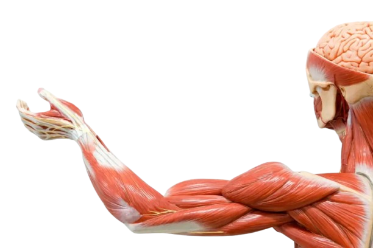

Mușchii scheletici asigură tonusul, postura, echilibrul, mimica și mișcările voluntare.
este componenta efectorie a reflexelor somatice de tonus, postură, echilibru și redresare, precum și a activității motorii voluntare, a expresiei stărilor afectiv-emoționale și a limbajului.
Mușchii scheletici reprezintă aproximativ 40% din masa organismului.